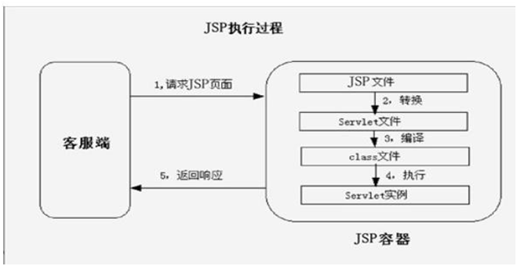

第7章Java Web¶
7.1 http 的长连接和短连接¶
HTTP 协议有 HTTP/1.0 版本和 HTTP/1.1 版本。HTTP1.1 默认保持长连接（HTTP persistent connection，也翻译为持久连接），数据传输完成了保持 TCP 连接不断开（不发 RST 包、不四次握手），等待在同域名下继续用这个通道传输数据；相反的就是短连接。
在 HTTP/1.0 中，默认使用的是短连接。也就是说，浏览器和服务器每进行一次 HTTP 操作，就建立一次连接，任务结束就中断连接。从 HTTP/1.1 起，默认使用的是长连接，用以保持连接特性。
7.2 http 常见的状态码有哪些？¶
200 OK //客户端请求成功
301 Moved Permanently（永久移除)，请求的 URL 已移走。Response 中应该包含一个 Location URL, 说明资源现在所处的位置
302 found 重定向
400 Bad Request //客户端请求有语法错误，不能被服务器所理解
401 Unauthorized //请求未经授权，这个状态代码必须和 WWW-Authenticate 报头域一起使用
403 Forbidden //服务器收到请求，但是拒绝提供服务
404 Not Found //请求资源不存在，eg：输入了错误的 URL
500 Internal Server Error //服务器发生不可预期的错误
503 Server Unavailable //服务器当前不能处理客户端的请求，一段时间后可能恢复正常
7.3 GET 和POST 的区别？¶
（1）GET 请求的数据会附在URL 之后（就是把数据放置在 HTTP 协议头中），以?分割URL 和传输数据，参数之间以&相连，如：login.action?name=zhagnsan&password=123456。POST 把提交的数据则放置在是 HTTP 包的包体中。
（2）GET 方式提交的数据最多只能是 1024 字节，理论上POST 没有限制，可传较大量的数据。其实这样说是错误的，不准确的：“GET 方式提交的数据最多只能是 1024 字节"，因为 GET 是通过 URL 提交数据，那么 GET 可提交的数据量就跟URL 的长度有直接关系了。而实际上，URL 不存在参数上限的问题，HTTP 协议规范没有对 URL 长度进行限制。这个限制是特定的浏览器及服务器对它的限制。IE 对URL 长度的限制是2083 字节(2K+35)。对于其他浏览器，如Netscape、FireFox 等，理论上没有长度限制，其限制取决于操作系统的支持。
（3）POST 的安全性要比GET 的安全性高。注意：这里所说的安全性和上面 GET 提到的“安全”不是同个概念。上面“安全”的含义仅仅是不作数据修改，而这里安全的含义是真正的 Security 的含义，比如：通过 GET 提交数据，用户名和密码将明文出现在 URL 上，因为(1)登录页面有可能被浏览器缓存，(2)其他人查看浏览器的历史纪录，那么别人就可以拿到你的账号和密码了，除此之外，使用 GET 提交数据还可能会造成 Cross-site request forgery 攻击。
Get 是向服务器发索取数据的一种请求，而 Post 是向服务器提交数据的一种请求，在 FORM（表单）中，Method
默认为"GET"，实质上，GET 和 POST 只是发送机制不同，并不是一个取一个发！
7.4 Cookie 和Session 的区别¶
Cookie 是 web 服务器发送给浏览器的一块信息，浏览器会在本地一个文件中给每个 web 服务器存储 cookie。以后浏览器再给特定的 web 服务器发送请求时，同时会发送所有为该服务器存储的 cookie。
Session 是存储在 web 服务器端的一块信息。session 对象存储特定用户会话所需的属性及配置信息。当用户在应用程序的 Web 页之间跳转时，存储在 Session 对象中的变量将不会丢失，而是在整个用户会话中一直存在下去。
Cookie 和session 的不同点：
（1）无论客户端做怎样的设置，session 都能够正常工作。当客户端禁用 cookie 时将无法使用 cookie。
（2）在存储的数据量方面：session 能够存储任意的java 对象，cookie 只能存储 String 类型的对象。
7.5在单点登录中，如果 cookie 被禁用了怎么办？¶
单点登录的原理是后端生成一个 session ID，然后设置到 cookie，后面的所有请求浏览器都会带上 cookie，然后服务端从 cookie 里获取 session ID，再查询到用户信息。所以，保持登录的关键不是 cookie，而是通过cookie 保存和传输的 session ID，其本质是能获取用户信息的数据。除了 cookie，还通常使用 HTTP 请求头来传输。但是这个请求头浏览器不会像 cookie 一样自动携带，需要手工处理。
7.6什么是jsp，什么是Servlet？jsp 和Servlet 有什么区别？¶
jsp 本质上就是一个Servlet，它是 Servlet 的一种特殊形式（由 SUN 公司推出），每个 jsp 页面都是一个servlet实例。
Servlet 是由 Java 提供用于开发 web 服务器应用程序的一个组件，运行在服务端，由 servlet 容器管理，用来生成动态内容。一个 servlet 实例是实现了特殊接口 Servlet 的 Java 类，所有自定义的 servlet 均必须实现 Servlet 接口。
区别：
jsp 是 html 页面中内嵌的Java 代码，侧重页面显示；
Servlet 是 html 代码和 Java 代码分离，侧重逻辑控制，mvc 设计思想中jsp 位于视图层，servlet 位于控制层
Jsp 运行机制：如下图

JVM 只能识别 Java 类，并不能识别 jsp 代码！web 容器收到以.jsp 为扩展名的 url 请求时，会将访问请求交给tomcat 中 jsp 引擎处理，每个 jsp 页面第一次被访问时，jsp 引擎将 jsp 代码解释为一个 servlet 源程序，接着编译servlet 源程序生成.class 文件，再有 web 容器 servlet 引擎去装载执行servlet 程序，实现页面交互。
7.7 servlet生命周期¶
Servlet 加载—>实例化—>服务—>销毁。
生命周期详解：
init（）：
在Servlet的生命周期中，仅执行一次init()方法。它是在服务器装入Servlet时执行的，负责初始化Servlet对象。可以配置服务器，以在启动服务器或客户机首次访问Servlet时装入Servlet。无论有多少客户机访问Servlet，都不会重复执行init（）。
service（）：
它是Servlet的核心，负责响应客户的请求。每当一个客户请求一个HttpServlet对象，该对象的Service()方法就要调用，而且传递给这个方法一个“请求”（ServletRequest）对象和一个“响应”（ServletResponse）对象作为参数。在HttpServlet中已存在Service()方法。默认的服务功能是调用与HTTP请求的方法相应的do功能。
destroy（）：
仅执行一次，在服务器端停止且卸载Servlet时执行该方法。当Servlet对象退出生命周期时，负责释放占用的资源。一个Servlet在运行service()方法时可能会产生其他的线程，因此需要确认在调用destroy()方法时，这些线程已经终止或完成。
如何与Tomcat 结合工作步骤：
（1）Web Client 向Servlet容器（Tomcat）发出Http请求
（2）Servlet容器接收Web Client的请求
（3）Servlet容器创建一个HttpRequest对象，将Web Client请求的信息封装到这个对象中。
（4）Servlet容器创建一个HttpResponse对象
（5）Servlet容器调用HttpServlet对象的service方法，把HttpRequest对象与HttpResponse对象作为参数传给HttpServlet 对象。
（6）HttpServlet调用HttpRequest对象的有关方法，获取Http请求信息。
（7）HttpServlet调用HttpResponse对象的有关方法，生成响应数据。
7.8 servlet特性¶
单例多线程
7.9 servlet是单实例的吗？¶
servlet是单实例的
7.10 servlet是线程安全的吗？为什么？¶
Servlet对象并不是一个线程安全的对象。
Servlet第一次被调用的时候，init()方法会被调用，然后调用service() 方法，从第二次被请求开始，就直接调用service()方法。
因为servlet是单实例的，所以后面再次请求同一个Servlet的时候都不会创建Servlet实例，
而且web容器会针对每个请求创建一个独立的线程，这样多个并发请求会导致多个线程同时调用 service() 方法，这样就会存在线程不安全的问题。
7.11如何解决Servlet线程不安全的问题？¶
（1）不要在servlet中使用成员变量。
（2）可以给servlet中的方法添加同步锁，Synchronized，但是不提倡，数据并发访问会造成阻塞等待。
（3）可以实现 SingleThreadModel 接口，如下。这样可以避免使用成员变量的问题，但是也不提倡，原因同上。
Public class Servlet1 extends HttpServlet implements SingleThreadModel{
……..
}
7.12谈谈过滤器的作用¶
过滤器，是在java web中，你传入的request,response提前过滤掉一些信息，或者提前设置一些参数，然后再传入servlet或者struts的 action进行业务逻辑，比如过滤掉非法url（不是login.do的地址请求，如果用户没有登陆都过滤掉）,或者在传入servlet或者 struts的action前统一设置字符集，或者去除掉一些非法字符
7.13谈谈拦截器的作用¶
拦截器，是在面向切面编程的就是在你的service或者一个方法，前调用一个方法，或者在方法后调用一个方法比如动态代理就是拦截器的简单实现，在你调用方法前打印出字符串（或者做其它业务逻辑的操作），也可以在你调用方法后打印出字符串，甚至在你抛出异常的时候做业务逻辑的操作。
7.14拦截器和过滤器有什么区别¶
拦截器是基于java的反射机制的，而过滤器是基于函数回调。
拦截器不依赖servlet容器，过滤器依赖与servlet容器。
拦截器只能对action请求起作用，而过滤器则可以对几乎所有的请求起作用。
拦截器可以访问action上下文、值栈里的对象，而过滤器不能访问。
在action的生命周期中，拦截器可以多次被调用，而过滤器只能在容器初始化时被调用一次
7.15拦截器和过滤器的执行顺序¶
过滤前 – 拦截前 – Action处理 – 拦截后 – 过滤后。
过滤是一个横向的过程，首先把客户端提交的内容进行过滤(例如未登录用户不能访问内部页面的处理)；过滤通过后，拦截器将检查用户提交数据的验证，做一些前期的数据处理，接着把处理后的数据发给对应的Action；Action处理完成返回后，拦截器还可以做其他过程(还没想到要做啥)，再向上返回到过滤器的后续操作。
7.16说一下 jsp 的 4 种作用域？¶
application、session、request、page
application 作用域
如果把变量放到application里，就说明它的作用域是application，它的有效范围是整个应用。整个应用是指从应用启动，到应用结束。我们没有说“从服务器启动，到服务器关闭”，是因为一个服务器可能部署多个应用，当然你关闭了服务器，就会把上面所有的应用都关闭了。 application作用域里的变量，它们的存活时间是最长的，如果不进行手工删除，它们就一直可以使用。
application作用域上的信息传递是通过ServletContext实现的，它提供的主要方法如下所示：
Object getAttribute（String name） //从application中获取信息；
void setAttribute（String name, Object value） //向application作用域中设置信息。
session作用域
session作用域比较容易理解，同一浏览器对服务器进行多次访问，在这多次访问之间传递信息，就是session作用域的体现。如果把变量放到session里，就说明它的作用域是session，它的有效范围是当前会话。所谓当前会话，就是指从用户打开浏览器开始，到用户关闭浏览器这中间的过程。这个过程可能包含多个请求响应。也就是说，只要用户不关浏览器，服务器就有办法知道这些请求是一个人发起的，整个过程被称为一个会话（session），而放到会话中的变量，就可以在当前会话的所有请求里使用。
session是通过HttpSession接口实现的，它提供的主要方法如下所示：
ObjectHttpSession.getAttribute（String name） //从session中获取信息。
void HttpSession.setAttribute（String name, Object value）//向session中保存信息。
HttpSession HttpServletRequest.getSessio() //获取当前请求所在的session的对象。
session的开始时刻比较容易判断，它从浏览器发出第一个HTTP请求即可认为会话开始。但结束时刻就不好判断了，因为浏览器关闭时并不会通知服务器，所以只能通过如下这种方法判断：如果一定的时间内客户端没有反应，则认为会话结束。Tomcat的默认值为120分钟，但这个值也可以通过HttpSession的setMaxInactiveInterval()方法来设置：
void setMaxInactiveInterval(int interval)
如果想主动让会话结束，例如用户单击“注销”按钮的时候，可以使用 HttpSession 的 invalidate()方法，用于强制结束当前session：void invalidate()
request作用域
一个HTTP请求的处理可能需要多个Servlet合作，而这几个Servlet之间可以通过某种方式传递信息，但这个信息在请求结束后就无效了。request里的变量可以跨越forward前后的两页。但是只要刷新页面，它们就重新计算了。如果把变量放到request里，就说明它的作用域是request，它的有效范围是当前请求周期。所谓请求周期，就是指从http请求发起，到服务器处理结束，返回响应的整个过程。在这个过程中可能使用forward的方式跳转了多个jsp页面，在这些页面里你都可以使用这个变量。
Servlet之间的信息共享是通过HttpServletRequest接口的两个方法来实现的：
void setAttribute（String name, Object value） //将对象value以name为名称保存到request作用域中。
Object getAttribute（String name） //从request作用域中取得指定名字的信息。
JSP中的doGet()、doPost()方法的第一个参数就是HttpServletRequest对象，使用这个对象的 setAttribute()方法即可传递信息。那么在设置好信息之后，要通过何种方式将信息传给其他的Servlet呢？这就要用到RequestDispatcher接口的forward()方法，通过它将请求转发给其他Servlet。
RequestDispatcher ServletContext.getRequestDispatcher(String path) //取得Dispatcher以便转发，path为转发的目的Servlet。
void RequestDispatcher.forward(ServletRequest request, ServletResponse response)//将request和response转发
因此，只需要在当前Servlet中先通过setAttribute()方法设置相应的属性，然后使用forward()方法进行跳转，最后在跳转到的Servlet中通过使用getAttribute()方法即可实现信息传递。
需要注意两点：
1、转发不是重定向，转发是在Web应用内部进行的。
2、转发对浏览器是透明的，也就是说，无论在服务器上如何转发，浏览器地址栏中显示的仍然是最初那个Servlet的地址。
page作用域
page对象的作用范围仅限于用户请求的当前页面，对于page对象的引用将在响应返回给客户端之后被释放，或者在请求被转发到其他地方后被释放。page里的变量只要页面跳转了，它们就不见了。如果把变量放到pageContext里，就说明它的作用域是page，它的有效范围只在当前jsp页面里。从把变量放到pageContext开始，到jsp页面结束，你都可以使用这个变量。
以上介绍的作用范围越来越小，request和page的生命周期都是短暂的，它们之间的区别：一个request可以包含多个page页（include，forward及filter）。
7.17 jsp 有哪些内置对象？作用分别是什么？¶
JSP共有以下9个内置的对象：
request 用户端请求，此请求会包含来自GET/POST请求的参数
response 网页传回用户端的回应
pageContext 网页的属性是在这里管理
session 与请求有关的会话期
application servlet 正在执行的内容
out 用来传送回应的输出
config servlet的构架部件
page JSP网页本身
exception 针对错误网页，未捕捉的例外
request表示HttpServletRequest对象。它包含了有关浏览器请求的信息，并且提供了几个用于获取cookie, header,和session数据的有用的方法。
response表示HttpServletResponse对象，并提供了几个用于设置送回浏览器的响应的方法（如cookies,头信息等）
out对象是javax.jsp.JspWriter的一个实例，并提供了几个方法使你能用于向浏览器回送输出结果。
pageContext表示一个javax.servlet.jsp.PageContext对象。它是用于方便存取各种范围的名字空间、servlet相关的对象的API，并且包装了通用的
servlet相关功能的方法。
session表示一个请求的javax.servlet.http.HttpSession对象。Session可以存贮用户的状态信息
applicaton 表示一个javax.servle.ServletContext对象。这有助于查找有关servlet引擎和servlet环境的信息
config表示一个javax.servlet.ServletConfig对象。该对象用于存取servlet实例的初始化参数。
page表示从该页面产生的一个servlet实例
7.18转发（Forward）和重定向（Redirect）的区别？¶
重定向会改变URL地址，请求转发不会
重定向可以用URL绝对路径访问其他web服务器的资源，而请求转发只能在一个web应用程序内进行资源转发
重定向效率低，相当于再一次请求，请求转发跳转仅发生在服务器端。
7.19Request对象的主要方法有哪些？¶
Request对象的主要方法：
setAttribute(String name,Object)：设置名字为name的request 的参数值
getAttribute(String name)：返回由name指定的属性值
getAttributeNames()：返回request 对象所有属性的名字集合，结果是一个枚举的实例
getCookies()：返回客户端的所有 Cookie 对象，结果是一个Cookie 数组
getCharacterEncoding() ：返回请求中的字符编码方式
getContentLength() ：返回请求的 Body的长度
getHeader(String name) ：获得HTTP协议定义的文件头信息
getHeaders(String name) ：返回指定名字的request Header 的所有值，结果是一个枚举的实例
getHeaderNames() ：返回所以request Header 的名字，结果是一个枚举的实例
getInputStream() ：返回请求的输入流，用于获得请求中的数据
getMethod() ：获得客户端向服务器端传送数据的方法
getParameter(String name) ：获得客户端传送给服务器端的有 name指定的参数值
getParameterNames() ：获得客户端传送给服务器端的所有参数的名字，结果是一个枚举的实
7.20request.getAttribute()和 request.getParameter()有何区别？¶
getParameter 得到的都是 String 类型的。或者是 http://a.jsp?id=123 中的 123，或者是某个表
单提交过去的数据。
getAttribute 则可以是对象。
getParameter()是获取 POST/GET 传递的参数值；
getAttribute()是获取对象容器中的数据值；
getParameter：用于客户端重定向时，即点击了链接或提交按扭时传值用，即用于在用表单
或 url 重定向传值时接收数据用。
getAttribute：用于服务器端重定向时，即在 sevlet 中使用了 forward 函数,或 struts 中使用了
mapping.findForward。 getAttribute 只能收到程序用 setAttribute 传过来的值。
getParameter()是获取 POST/GET 传递的参数值；
getAttribute()是获取 SESSION 的值；
另外，可以用 setAttribute,getAttribute 发送接收对象.而 getParameter 显然只能传字符串。
setAttribute 是应用服务器把这个对象放在该页面所对应的一块内存中去，当你的页面服务器
重定向到另一个页面时，应用服务器会把这块内存拷贝另一个页面所对应的内存中。这样
getAttribute 就能取得你所设下的值，当然这种方法可以传对象。 session 也一样，只是对象
在内存中的生命周期不一样而已。 getParameter 只是应用服务器在分析你送上来的 request
页面的文本时，取得你设在表单或 url 重定向时的值。
getParameter 返回的是 String, 用于读取提交的表单中的值;
getAttribute 返回的是 Object，需进行转换,可用 setAttribute 设置成任意对象，使用很灵活，
可随时用；
7.21JSP中动态include和静态include的区别？¶
动态的include：
用法：
特点：行为元素，可以带参数；先编译，再页面合成；它总是会检查所含文件中的变化，适合用于包含动态页面；
因此，动态include的结构是互相独立的，所包含的jsp文件中的变量不可以同它的主文件共享，需要自行创建所使用的对象和页面设置；
静态的include:
用法：<%@ include file="1.htm" %>
特点：指令元素；不能带参数；先页面合成，再编译；不会检查所含文件的变化，适用于包含静态页面；
因此，静态include的结构是高度紧密的，所包含的jsp文件中所有的变量都可以同它的主文件共享,但不能有变量同名的冲突，连页面设置都可以借用主文件的.
扩展：
两种用法中file和page属性都被解释为一个相对的URI.
若以斜杠开头,说明它是一个环境相关的路径.将根据所指定URI的前缀进行解释,
若不是不是以斜杠开头,说明它是页面相关的路径,将根据当前页面路径进行解释.
7.22JSP乱码如何解决？¶
1.查看jsp文件头是否设置了编码格式：
2.查看项目的编码格式：设置为UTF-8
3.提交的表单乱码等问题，需要在请求头响应头设置编码
4.设置tomcat服务器编码格式，默认情况下，tomcat使用的的编码方式：iso8859-1，打开setting.xml文件（在tomcat文件夹conf中）
7.23什么是Tomcat？¶
Tomcat简单的说就是一个运行JAVA的网络服务器，底层是Socket的一个程序，它也是JSP和Serlvet的一个容器。
7.24详细描述MVC¶
基于java的web应用系统采用MVC设计模型，即用Model（模型）、View（视图）和Controller（控制）分离设计，这是目前web应用服务系统的主流设置方向。
Model：处理业务逻辑的模块。
View：负责页面显示，显示Model的处理结果给用户，主要实现数据到页面的转换过程。
Controller：负责每个请求的分发，把Form数据传递给Model进行处理，处理完成后，把处理结果返回给相应的View显示给用户。
7.25Http请求由哪三部分组成?¶
http协议报文
1.请求报文(请求行/请求头/请求数据/空行)
请求行
求方法字段、URL字段和HTTP协议版本
例如：GET /index.html HTTP/1.1
get方法将数据拼接在url后面，传递参数受限
请求方法：
GET、POST、HEAD、PUT、DELETE、OPTIONS、TRACE、CONNECT
请求头(key value形式)
User-Agent：产生请求的浏览器类型。
Accept：客户端可识别的内容类型列表。
Host：主机地址
请求数据
post方法中，会把数据以key value形式发送请求
空行
发送回车符和换行符，通知服务器以下不再有请求头
2.响应报文(状态行、消息报头、响应正文)
状态行
消息报头
响应正文
7.26如何实现跨域？¶
1、jsonp
利用了 script 不受同源策略的限制
缺点：只能 get 方式，易受到 XSS攻击
2、CORS（Cross-Origin Resource Sharing）,跨域资源共享
当使用XMLHttpRequest发送请求时，如果浏览器发现违反了同源策略就会自动加上一个请求头 origin；
后端在接受到请求后确定响应后会在后端在接受到请求后确定响应后会在 Response Headers 中加入一个属性 Access-Control-Allow-Origin；
浏览器判断响应中的 Access-Control-Allow-Origin 值是否和当前的地址相同，匹配成功后才继续响应处理，否则报错
缺点：忽略 cookie，浏览器版本有一定要求
3、代理跨域请求
前端向发送请求，经过代理，请求需要的服务器资源
缺点：需要额外的代理服务器
4、Html5 postMessage 方法
允许来自不同源的脚本采用异步方式进行有限的通信，可以实现跨文本、多窗口、跨域消息传递
缺点：浏览器版本要求，部分浏览器要配置放开跨域限制
5、修改 document.domain 跨子域
相同主域名下的不同子域名资源，设置 document.domain 为相同的一级域名
缺点：同一一级域名；相同协议；相同端口
6、基于 Html5 websocket 协议
websocket 是 Html5 一种新的协议，基于该协议可以做到浏览器与服务器全双工通信，允许跨域请求
缺点：浏览器一定版本要求，服务器需要支持 websocket 协议
7、document.xxx + iframe
通过 iframe 是浏览器非同源标签，加载内容中转，传到当前页面的属性中
缺点：页面的属性值有大小限制
7.27简述 tcp 和 udp的区别？¶
1：TCP基于连接，UDP基于无连接。
2：TCP对系统资源要求高，UDP少。
3：TCP是基于字节流的，UDP是数据报文模式。
4：TCP复杂，UDP简单。
7.28tcp 为什么要三次握手，两次不行吗？为什么？¶
两次握手只能保证单向连接是畅通的。
Step1 A -> B : 你好，B。
Step2 A <- B : 收到。你好，A。
这样的两次握手过程， A 向 B 打招呼得到了回应，即 A 向 B 发送数据，B 是可以收到的。
但是 B 向 A 打招呼，A 还没有回应，B 没有收到 A 的反馈，无法确保 A 可以收到 B 发送的数据。
只有经过第三次握手，才能确保双向都可以接收到对方的发送的数据。
Step3 A -> B : 收到，B。
这样 B 才能确定 A 也可以收到 B 发送给 A 的数据。
本文总阅读量次